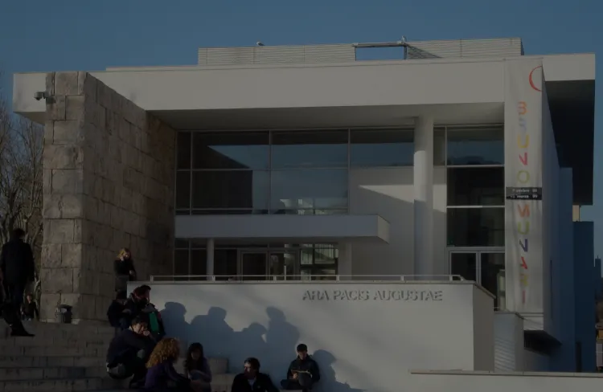

Ara Pacis Museum
Fondation Cartier
Au cœur de Rome, ville éternelle imprégnée d'histoire, l'Ara Pacis Museum se dresse comme un édifice moderne qui abrite l'un des trésors les plus emblématiques de l'Antiquité : l'Ara Pacis d'Auguste.
Conçu par l'architecte américain Richard Meier, ce musée incarne la fusion magistrale entre le passé et le présent, offrant une expérience unique aux visiteurs qui parcourent les siècles pour se plonger dans l'ère augustéenne.
par Viktor Ghirardelli
Publié aujourd’hui | Temps de lecture 1 min
Genèse et Réalisation
L'Ara Pacis Museum est né de la nécessité de protéger et de mettre en valeur l'Ara Pacis, l'autel de la paix commandé par l'empereur Auguste au 1er siècle avant J.-C. En 2006, Richard Meier a dévoilé ce musée moderne, une œuvre architecturale éblouissante située le long des rives du Tibre.
Les lignes épurées et le jeu subtil de la lumière font écho à la grandeur du passé, tout en offrant un cadre contemporain à cette relique historique.
Description Visuelle et Emplacement
Situé sur la Lungotevere in Augusta, l'Ara Pacis Museum est une déclaration visuelle. Les façades en verre et en travertin confèrent une élégance discrète à l'édifice, créant un dialogue subtil entre la modernité et l'antiquité. À l'intérieur, les visiteurs découvrent une mise en scène soigneusement orchestrée de l'Ara Pacis, baignée dans une lumière naturelle qui souligne les détails délicats de cette œuvre artistique exceptionnelle.
Le musée s'intègre parfaitement dans le tissu urbain de Rome, ajoutant une dimension contemporaine à la richesse historique de la ville. Les jardins qui entourent le musée offrent un espace serein, invitant les visiteurs à la contemplation.
Galerie
Découvrez le Ara Pacis Museum conçu par Richard Meier en explorant cette galerie d'images détaillée.